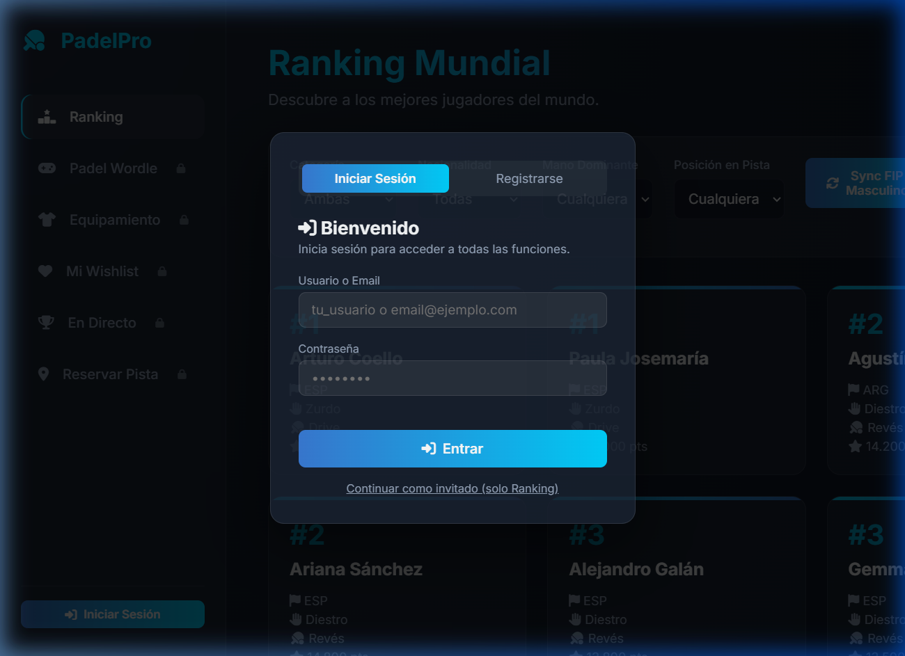
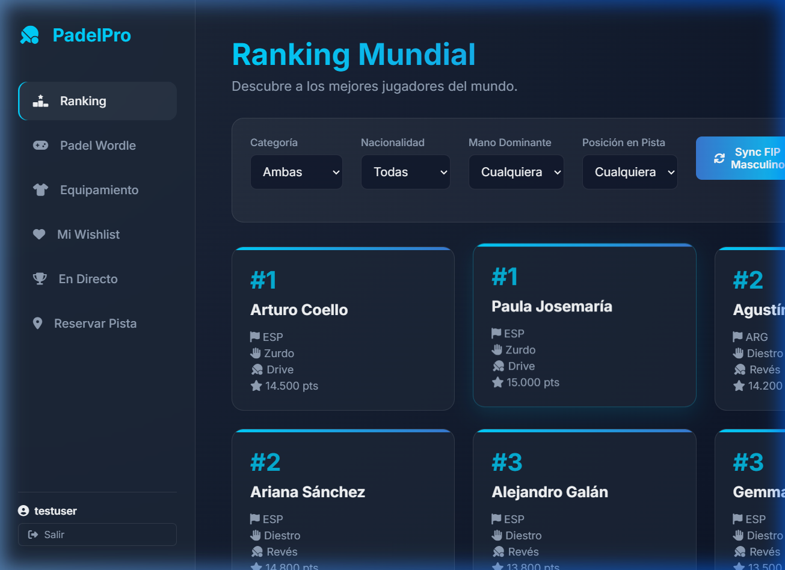
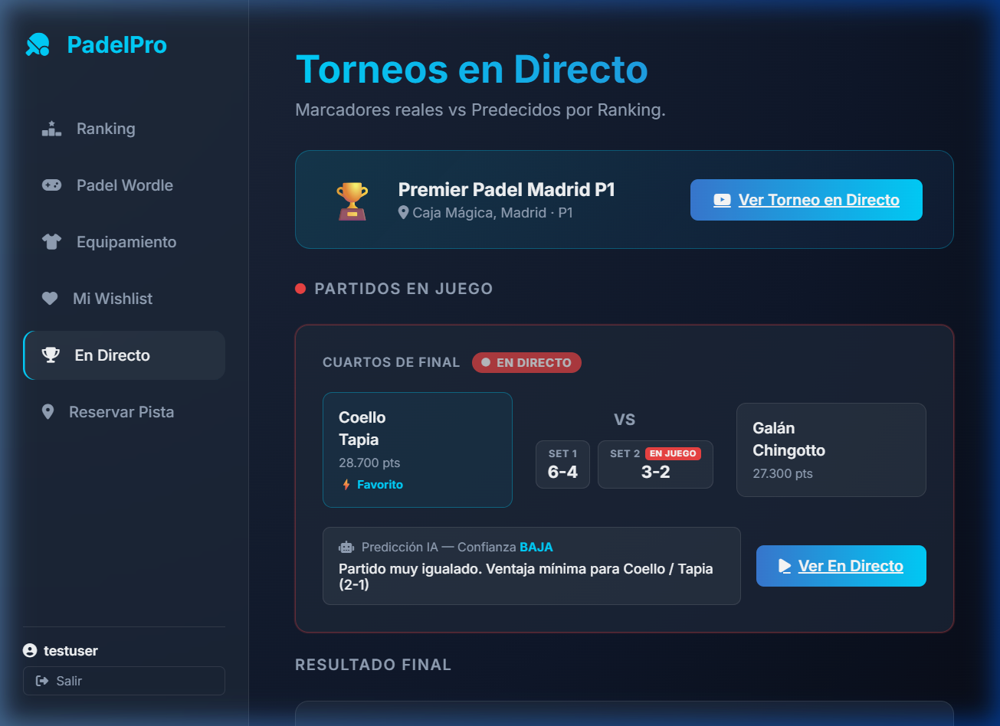
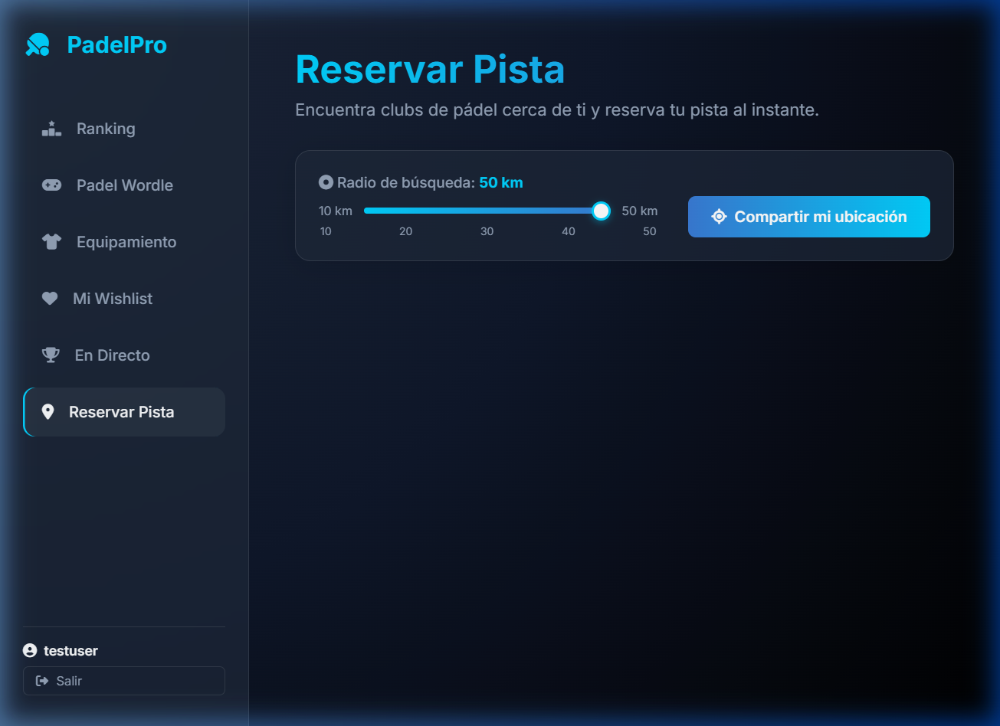
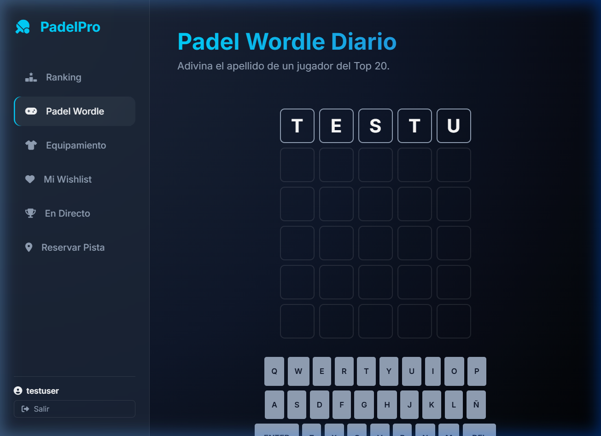
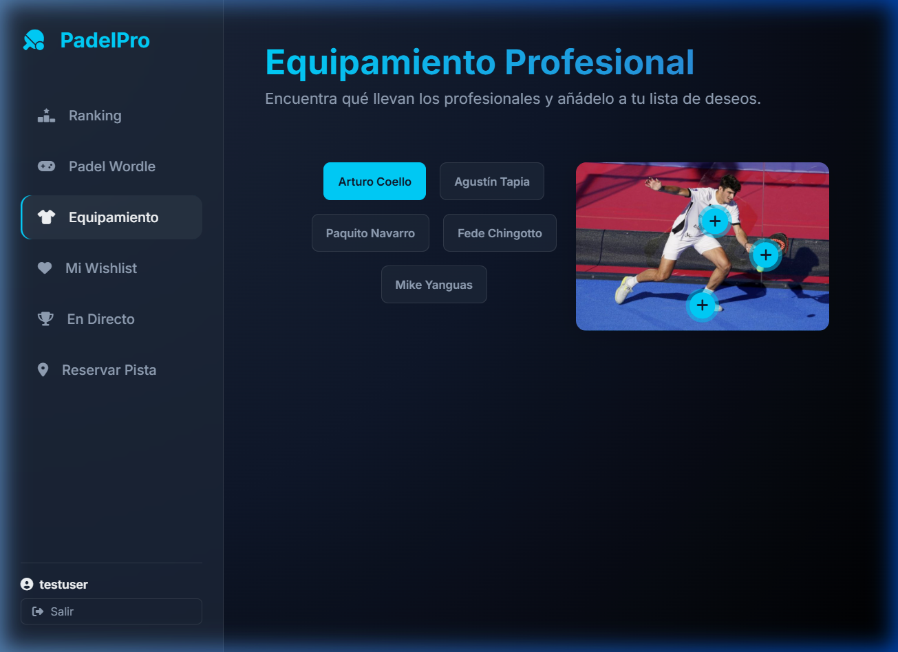

1. Introducción
PadelPro App es una aplicación web diseñada para los aficionados y profesionales del pádel. Te
permite consultar el ranking mundial FIP en tiempo real, seguir torneos en directo con predicciones de resultado,
encontrar clubs de pádel cerca de ti, explorar el equipamiento de los mejores jugadores y mucho más.
🏆 Ranking Mundial
Consulta el top mundial FIP masculino y femenino con filtros avanzados por
nacionalidad, mano y posición.
🔴 En Directo
Sigue torneos activos, consulta marcadores por sets y obtén predicciones IA
basadas en el ranking.
📍 Reservar Pista
Encuentra clubs cerca de ti con geolocalización y radio de búsqueda ajustable de
10 a 50 km.
🎮 Padel Wordle
Juego diario: adivina el apellido de un jugador del Top 20. La palabra cambia
cada día a medianoche.
👕 Equipamiento
Explora qué llevan los pros con hotspots interactivos y guarda tus equipaciones
favoritas en tu wishlist.
❤️ Mi Wishlist
Lista de deseos personal con el equipamiento que has marcado como favorito
durante la sesión.
ℹ️ Requisitos
Solo necesitas un navegador web moderno (Chrome, Firefox, Edge) y tener el servidor corriendo en tu máquina o
acceder a la URL donde esté desplegado.
2. Primer Uso: Registro e Inicio de Sesión
Al abrir la aplicación verás el panel de bienvenida. Puedes acceder de dos formas:

📸 Modal de autenticación — Login / Registro / Invitado
Opciones de acceso
-
A
Iniciar Sesión (cuenta existente)
Escribe tu nombre de usuario o email en el primer campo, tu contraseña y pulsa
"Entrar".
-
B
Crear nueva cuenta
Haz clic en la pestaña "Registrarse", rellena nombre de usuario, email
y una contraseña de al menos 6 caracteres. Pulsa "Crear cuenta". El sistema iniciará sesión
automáticamente.
-
C
Continuar como invitado
Haz clic en "Continuar como invitado". Podrás ver el Ranking mundial
pero las demás secciones requerirán cuenta.
✅ Sesión persistente
Una vez que inicies sesión, la app recordará tu cuenta aunque cierres el navegador. Para salir, usa el botón
"Salir" en la parte inferior del menú lateral.
3. Funcionalidades Principales
🏆 Ranking Mundial
La sección de ranking muestra las tarjetas de todos los jugadores ordenados por su posición FIP. Puedes
filtrarlos usando los selectores en la barra superior.

📸 Ranking Mundial — Tarjetas de jugadores con filtros activos
- Categoría: alterna entre Ambas, Masculino o Femenino.
- Nacionalidad: filtra por país (ESP, ARG, BRA…).
- Mano Dominante: Diestro o Zurdo.
- Posición: Drive o Revés.
- Sync FIP: descarga el ranking oficial actualizado desde la FIP.
🔴 Torneos En Directo
Esta sección muestra los torneos activos, sus partidos y las predicciones de resultado basadas en los puntos del
ranking de cada pareja.

📸 Sección En Directo — Banner de torneo, marcadores y predicción IA
- El banner superior indica el torneo activo y tiene un botón para ver el stream en YouTube.
- Cada tarjeta de partido muestra el marcador por sets y el equipo favorito marcado con ⚡.
- La Predicción IA indica el ganador más probable con nivel de confianza (ALTA / MEDIA / BAJA)
basándose en la suma de puntos FIP de cada pareja.
- El botón "Ver En Directo" abre el stream del partido en una nueva pestaña.
📍 Reservar Pista
Encuentra clubs de pádel cercanos usando la geolocalización de tu dispositivo.

📸 Reservar Pista — Slider de radio y botón de geolocalización
-
1
Ajusta el radio de búsqueda
Mueve el slider para elegir entre 10, 20, 30, 40 o 50 km. El valor actual se muestra en
azul junto al label.
-
2
Comparte tu ubicación
Pulsa "Compartir mi ubicación" y acepta el permiso del navegador. Los
clubs aparecerán ordenados por distancia.
-
3
Reserva una pista
Usa "Ver Mapa" para ver el club en Google Maps, o pulsa
"Reservar", elige hora y confirma. Verás un mensaje de confirmación en la esquina inferior
derecha.
🎮 Padel Wordle Diario
Adivina el apellido de un jugador del Top 20 en 6 intentos. Las letras se colorean según si están en la posición
correcta, presentes en otra posición o ausentes.

📸 Padel Wordle — Tablero en mitad de una partida con retroalimentación cromática
Cómo jugar:
- 🟩 Verde — La letra está en la posición correcta.
- 🟨 Amarillo — La letra está en la palabra pero en otra posición.
- ⬛ Gris — La letra no aparece en la palabra.
- Usa el teclado virtual o tu teclado físico. La palabra cambia cada día a medianoche.
👕 Equipamiento Profesional
Explora lo que llevan los mejores jugadores del mundo con hotspots interactivos sobre sus fotos.

📸 Equipamiento — Hotspots interactivos sobre las equipaciones de los pros
- Usa los botones de jugador en la parte superior para cambiar entre perfiles.
- Haz clic o pasa el ratón sobre los puntos azules (hotspots) para ver el nombre y descripción
de cada prenda.
- Pulsa "Añadir a Wishlist" en el tooltip para guardar el ítem en tu lista de deseos.
- Accede a tu wishlist desde el menú lateral "Mi Wishlist".
4. Preguntas Frecuentes (FAQ)
¿Se pierden mis datos si cierro el navegador?
La sesión de usuario persiste en localStorage. Sin embargo, la base de datos es en memoria
durante el desarrollo, así que los usuarios registrados se pierden al reiniciar el servidor. La wishlist también
se guarda en localStorage del navegador.
¿Por qué el ranking tarda en cargar?
El servidor Spring Boot tarda ~15-30 segundos en arrancar y poblar la base de datos. Si ves un
spinner, espera un momento y la lista aparecerá automáticamente.
¿Por qué no aparecen clubs al compartir mi ubicación?
Puede que el radio sea muy pequeño y no haya clubs simulados en esa distancia. Prueba a
aumentar el slider a 50 km. También asegúrate de haber dado permiso de geolocalización en tu navegador.
¿La Predicción IA del Wordle es correcta?
El Wordle no tiene IA. La palabra objetivo es el apellido de un jugador del Top 20 seleccionado
según la fecha del día. La IA solo aplica en la sección "En Directo".
¿Por qué falla la sincronización FIP?
La sincronización descarga un PDF de la Federación Internacional de Pádel. Si la URL del PDF
cambia en su web, la sincronización puede fallar. Los datos de la base de datos local seguirán disponibles.
5. Solución de Problemas Comunes
🔴 El servidor no responde (página en blanco o error de conexión)
El servidor Spring Boot no está corriendo. Ábrelo con
.\mvnw.cmd spring-boot:run desde la carpeta del
proyecto y espera 30 segundos.
⚠️ No puedo iniciar sesión con mis credenciales
Si el servidor se reinició, los usuarios de la base de datos en memoria se habrán borrado. Regístrate de nuevo con
el mismo usuario y contraseña. La sesión se guardará durante esta ejecución.
ℹ️ Las secciones muestran un candado y no puedo entrar
Debes iniciar sesión o crear una cuenta. La sección de Ranking es pública; el resto requiere autenticación. Haz
clic en
"Iniciar Sesión" en la parte inferior del menú lateral.
✅ Credenciales de prueba
Si el servidor acaba de arrancar, regístrate con cualquier usuario/contraseña. Si ya existe una sesión previa, usa
el mismo par de credenciales con el que te registraste en esa sesión.